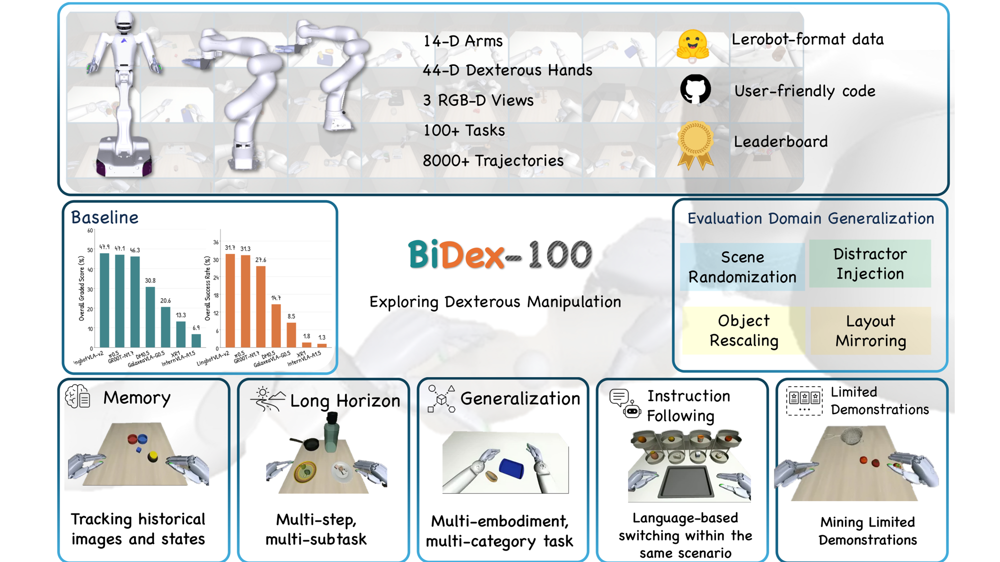
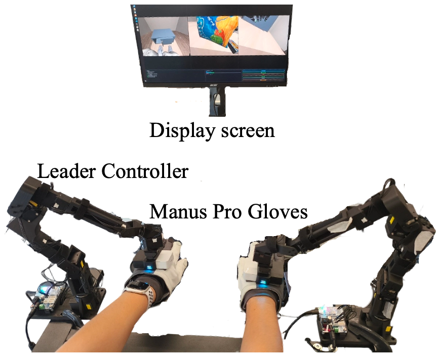
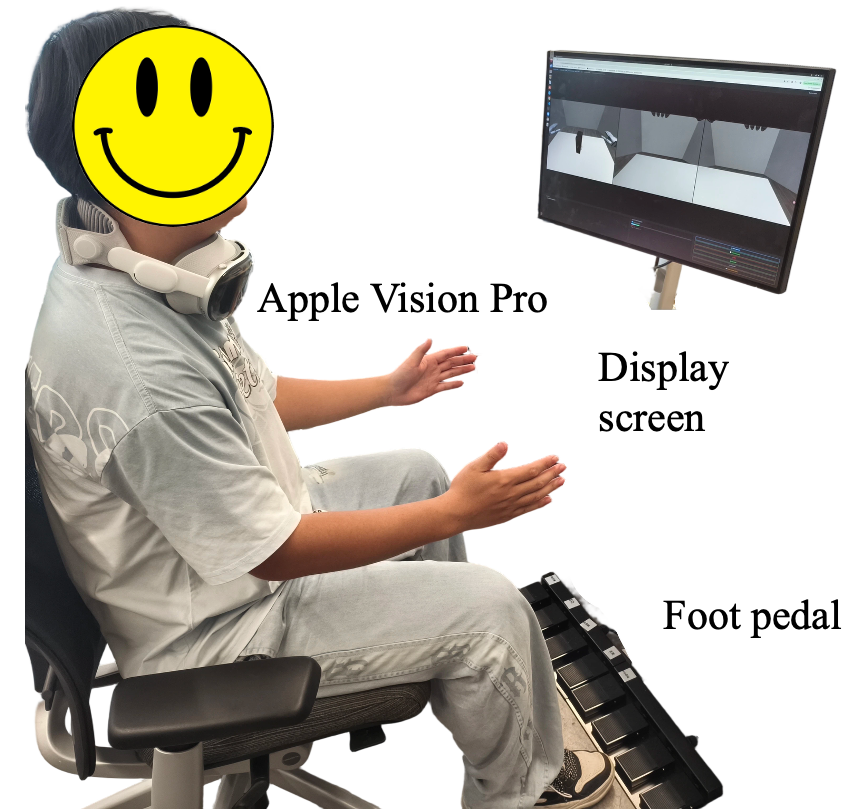

BiDex-100
BiDex-100
A Comprehensive Benchmark for Bimanual Dexterous Manipulation Across 100+ Simulation Tasks
Anonymous Institution(s) · Submitted for review
Abstract
Benchmarking bimanual dexterous manipulation along capability edges.
Bimanual manipulation with dexterous hands has attracted growing attention in research on robotic action models. However, few studies have developed benchmarks specifically tailored for dexterous manipulation, leaving it unclear how the dexterous-manipulation capability of existing models actually bears out. We present BiDex-100, a simulation benchmark for bimanual dexterous manipulation that combines broad task coverage, multi-dimensional evaluation, and high-DoF hand embodiments. Concretely, the benchmark comprises 106 tasks organized along five capability axes: Generalization, Instruction Following, Limited Demonstrations, Long Horizon, and Memory. Each task is paired with an out-of-domain variant featuring controlled visual and spatial changes, allowing systematic assessment of robustness. In addition, the benchmark supports two embodiments and provides 8,080 success-validated teleoperated demonstrations, totaling 6.25M frames. We evaluate seven recent Vision-Language-Action models under a unified protocol, establishing baselines for capability-specific performance, robustness, and data efficiency. Code, tasks, data, and evaluation tools will be made public.
System Overview
106 declarative tasks, two bimanual dexterous embodiments, matched ID / OOD scoring.

Benchmark
Five capability axes and benchmark comparison.
The suite design turns an aggregate score into an interpretable capability profile. Below, the five axes sit alongside a comparison of representative manipulation benchmarks.
Benchmark Comparison
Where BiDex-100 sits in the design space.
| Benchmark | Bimanual | DoF / hand | Tasks | Progress score | OOD protocol | Demonstrations |
|---|---|---|---|---|---|---|
| Meta-World | ✗ | — | 50 | ✗ | ✗ | ✗ |
| RLBench | ✗ | — | 100 | ✗ | ✗ | synth. |
| LIBERO | ✗ | — | 130 | ✗ | ✗ | 50 / task |
| CALVIN | ✗ | — | 34 | partial | ✗ | teleop |
| RoboCasa | ✗ | — | 100 | ✗ | ✗ | 50–100 / task |
| ManiSkill2 | ✗ | — | 20+ | ✗ | ✗ | synth. |
| RoboTwin 2.0 | ✓ | — | 50 | ✗ | ✓ | synth. |
| RoboDojo | ✓ | — | 60 | ✓ | ✓ | teleop+synth. |
| DexJoCo | ✓ | 16 | 11 | ✗ | ✓ | teleop. |
| BiDex-100 (Ours) | ✓ | 22 | 106 | ✓ | ✓ | 8,080 teleop |
BiDex-100 occupies the vacant corner of this design space: bimanual 22-DoF dexterous hands, five capability axes, progress-based predicate scoring, matched ID/OOD evaluation, and a large released teleoperated dataset. The matrix reproduces the paper's benchmark-comparison table.
Setup
Embodiments, teleoperation pipeline, and synchronized observations.
Embodiment & Observation
Two bimanual 22-DoF dexterous embodiments, one 58-DoF joint interface.
Both platforms share the same 22-DoF Shadow-style dexterous hand on two 7-DoF arms, giving a 58-DoF action space. Observations are synchronized RGB-D images from head, left-wrist, and right-wrist cameras at 480×360 and 25 Hz, with full proprioceptive state. All 106 tasks are evaluated on the dual-Franka platform; 10 Generalization tasks are additionally instantiated on the Astribot S1 humanoid.
Teleoperation Pipeline
From human hands to bimanual dexterity — 8,080 validated episodes.
Demonstrations are collected through two complementary teleoperation modalities — an exoskeleton glove and an Apple Vision Pro headset — that feed a single optimization-based retargeting stack, producing one homogeneous 58-DoF data stream across platforms and devices.

Exoskeleton glove
An exoskeleton glove streams joint-level finger tracking for high-dexterity, contact-rich manipulation.

Apple Vision Pro
An Apple Vision Pro headset (WebXR) streams wrist poses and 25 hand keypoints for untethered operation.
Capture wrist & hand motion
The glove or headset streams human hand keypoints and wrist pose at the control rate; a fixed linear node map converts headset keypoints to the glove's canonical joint representation.
Retarget & solve IK
Arm targets come from a constrained NLP over the first five joints (SLSQP) minimizing weighted position, orientation and temporal-smoothness cost; two wrist DoF and arm-length mismatch are recovered in closed form. Hand targets are a weighted least-squares fit of robot keypoints to tracked human keypoints.
Record actions, states & observations
Each step stores the 58-DoF action, 130-D observation, six RGB-D streams, subtask-progress annotations, and a serialized initial state enabling exact replay of the episode's initial conditions.
Six Synchronized Camera Views
One episode, six time-aligned RGB-D streams.
Every demonstration episode stores color and depth for the head and both wrist cameras, fully synchronized. Press play to watch all six views in lockstep; drag the timeline to scrub. (Demo: Pour Ice Between Two Cups · Dual Franka.)
Domain Randomization
Matched In-Domain / Out-of-Domain evaluation through controlled randomization.
Goals are machine-checkable predicate conjunctions with deterministic seeding, progress-based subtask credit, and matched In-Domain / Out-of-Domain variants. Progress score rewards partial completion in [0,100]; strict success requires a perfect 100. Below, each of the five randomized conditions is demonstrated from the head camera on a different out-of-domain task.
__ood variant (identical seed & initial state) over five scripted shifts — directly comparable robustness.Five domain-randomization modes
The five scripted out-of-domain shifts
Tasks
The 106-task capability atlas.
Each card shows a head-camera frame from a real demonstration, the task's per-subtask completion (mini bars), and the best-performing model. Click any card for the demo replay, full per-subtask completion rates, and the 7-model In-Domain / Out-of-Domain breakdown. Filter by capability axis below.
Leaderboard
Overall ID / OOD scores and detailed per-task results.
Aggregate by capability axis 7 models
Per capability axis, in-domain / out-of-domain mean progress score and strict success rate (each averaged over the axis's task-runs), plus an Overall group (all-score aggregate progress score and strict success rate). The five colored axis groups mirror the Detailed Results breakdown below; the best value in each column is bolded.
Detailed Results
Per-task evaluation results · 106 tasks × 7 models.
Each cell is a model's score on one task, computed from 2 seeds × 25 episodes (50 rollouts) per domain. The heatmap runs light → teal as the value rises; the best model per task is bolded. Toggle the metric (progress vs. strict success) and the domain (ID / OOD / combined).
Cell shading scales with the value (0–100). Rows are grouped by capability axis (colored header); the Overall mean footer is the equal-weight per-model mean over 212 task-runs (106 tasks × 2 domains). Click a task row to re-highlight; open any task card in the gallery for the per-subtask breakdown. Best value per task is bolded.
Get Started
Code, tasks, data & evaluation tools.
@misc{bidex100,
title = {BiDex-100: A Comprehensive Benchmark for Bimanual Dexterous
Manipulation Across 100+ Simulation Tasks},
year = {2025},
howpublished = {https://github.com/BiDex-100/BiDex-100}
}